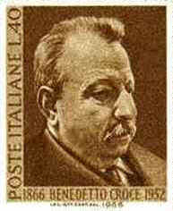

 |
Benedetto Croce "Those concepts that are found mingled with intuitions are no longer concepts, in so far as they are really mingled and fused, for they have lost all independence and autonomy. They have been concepts, but have now become simple elements of intuitions." |
"Of late, the futility of attempts to find a universally valid criterion for distinguishing species has come to be fairly generally, if reluctantly, recognized." —T. Dobzhansky, Genetics and the Origin of the Species
"The future of work consists of earning a living in the automation age. This is a familiar pattern in electric technology in general. It ends the old dichotomies between culture and technology, between art and commerce, and between work and leisure. Whereas in the mechanical age of fragmentation leisure had been the absence of work, or mere idleness, the reverse is true in the electric age. As the age of information demands the simultaneous use of all our faculties, we discover that we are most at leisure when we are most intensely involved, very much as with the artists in all ages." (Chapter 33)
How are the dichotomies between culture and technology, art and commerce, dissolved? Croce tells us that man is essentially an intuitive creature: concepts that are found mingled with intuitions are no longer concepts. E.g. the concepts of art and commerce, culture and technology, become fused as single intuitions. In our age of automation and plenary retrieval, an "information age that demands the simultaneous use of all our faculties," the artificial divisions imposed by conceptual, categorical or linear thinking of the Gutenberg era, break down and collapse, and the natural unity of human consciousness re-asserts itself.
Consider the division of science into physics, chemistry and biology. A closer inquiry of the "basic sciences" reveals that there is no intrinsic structural principle underlying this fragmentation and that it is merely an administrative convenience. For example, chemistry is defined as the examination of the 'chemical bond,' i.e., the examination of physical phenomena lying at some arbitrary position between nuclear physics and astrophysics. Just as there is no "universally valid criterion for distinguishing species," no identifiable structural principle validates the bifurcation of the sciences. Similarly, there is no essential difference between "the sciences" and "the humanities." Science, we are told, is experimental and inductive, but an artist employs experiment and induction with every brushstroke; here again we find that the demarcation between activities purely arbitrary and that there is an inescapable and fundamental unity to all human endeavor.